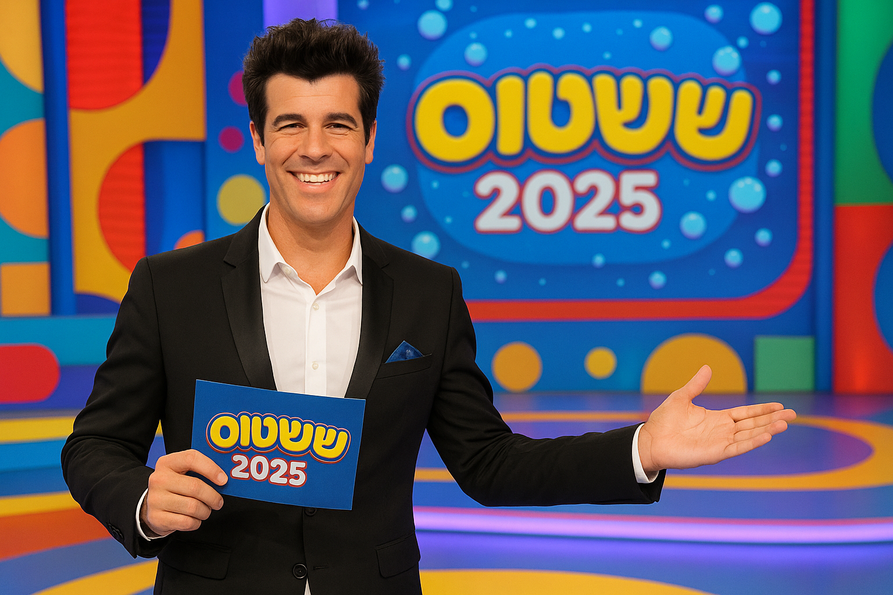

ראשי
+ynet
חדשות
24/7
פודקאסטים
כלכלה
ספורט
תרבות
רכילות
בריאות
רכב
דיגיטל
לאשה
אוכל
נדל"ן
עוד

8.5.25
|
י' באייר התשפ"ה
כעשור מאז שהסתיימה – טל מוסרי ינחה את העונה החדשה של ששטוס
בצעד מפתיע, לאחר שהואשם בבגידה חריפה נגד ערוץ הילדים, החליט מוסרי לחזור למקום שבו פרחה הקריירה שלו: "מה טוב לנדוד אך טוב יותר לחזור". ענקית התאגיד "ששטוס" תופיע שוב על המסכים ביוני הקרוב, אלפי ילידי שנות התשיעים נמהרים לחזור לבתי הספר היסודיים רק עבור ההזדמנות להשתתף. "בוא, תפעיל קצת את הראש, כי אין ממה לחשוש", אמרה חברתו דנה פרידר כאשר נשאלה על הקשר שלה לתוכנית ועל ההזדמנות לחזור לערוץ הילדים.
מערכת CSnet
8.5.25
|
י' באייר התשפ"ה
הוכרעה הסוגיה הבוערת ביותר במשחק הטאקי
בפוסט בפייסבוק הבהיר ממציא המשחק חיים שפיר כי קלף משנה-כיוון אינו מחזיר את התור למי שהניח אותו במשחק בן שני משתתפים. "טאקי תמיד לומד מישהו משחקן גדול יותר (בדרך כלל אח גדול)", הסביר שפיר את מקור הטעות, "והאח הגדול תמיד המציא לכם חוקים שעזרו לו לנצח (ואתם המשכתם את המסורת)".
מערכת CSnet
סערה פוליטית: דיון חירום בעקבות ההצבעה
התחזית: מזג אוויר קיצי צפוי בסופ"ש
תקלות נרחבות באפליקציית התחבורה
הצלחה לסטארטאפ ישראלי: גיוס של 50 מיליון דולר